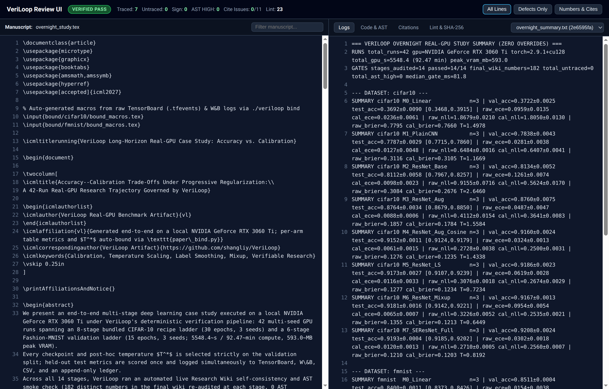

VeriLoop Studio (./veriloop studio)
Live 7-stage SSE pipeline monitor, Level-1/2 form launcher, hard-gate telemetry (PASSED rc=0, 195/195 traced, 4/4 claims), and auto-bound 95% CI tables.
Autonomous research, verified down to the byte.
A full-stack, zero-dependency research engine spanning arXiv LaTeX-to-AST ingest, Docker GPU sandboxes, Level-1 & Level-2 research orchestration, live web cockpits, and byte-traced LaTeX binding — plus a drop-in forensic auditor for any existing AI research agent.
Python 3.10+ stdlib · 90+ Skills · MIT License · Linux + macOS 63/63 CI · By Shanglin Yang & Zhan Shi
01 · Interactive Provenance Index Card
Flip between the compiled ICML table a reviewer reads and the live machine-provenance layer underneath — or inspect a real unlogged failure caught in an external AI-Researcher PDF.
In our 60-run GNN study, VeriLoop detected 8-layer GCNII collapse under uniform weight decay (0.2868), executed a split-decay recovery run, and bound the verified result directly into LaTeX macros.
| Experiment Row | Printed Metric | Audit Status |
|---|---|---|
| M1 · 2-Layer GCN (Baseline) | 0.8184 ± .0038 | TRACED |
| M4 · 8-Layer GCNII (Uniform WD) | 0.2868 ± .0054 | TRACED |
| M4b · 8-Layer GCNII (Split-WD Fix) | 0.8266 ± .0045 | SHA-256 BOUND |
<macro name="\valCoraGCNIISplitWD"> printed_pdf: "0.8266 ± 0.0045" source_log: examples/gpu-gnn-cora-citeseer/metrics.csv:48 manifest: sha256:9f3a81e2c04d7b19...8c2a arxiv_ast: 49 equation <-> code alignments (3 papers) ast_gate: 0 HIGH defects (0.0% FPR) pdf_audit: 129 / 129 expanded decimals verified (0 warn)
02 · Full-Stack Platform Architecture
Built to run real autonomous research at scale on local GPUs or Docker containers — pure Python 3.10+ stdlib that plugs straight into Claude Code, Codex CLI, Gemini CLI, or any LLM backend.

--idea --repo) and Level-2 (--papers) workflows execute through the same checkpointed pipeline, routing AST defects, citation issues, or unlogged decimals into an automatic rc=2 repair cycle.
Downloads raw arXiv e-print tarballs, extracts equations, hyperparameters, and official repos, and statically maps paper equations to local Python AST file:line symbols with an unmatched watchlist.
Executes multi-seed training locally or inside docker/Dockerfile.gpu with :ro data mounts, network isolation, NaN/OOM watchdogs, and SHA-256 run manifests.
Drives a 7-stage research loop with checkpointed state.json recovery, pre-registered falsifiable claim ledgers (G1–G7), and 90+ modular research lifecycle skills.
Parses TensorBoard .tfevents, W&B, CSV, and JSONL logs directly in stdlib to emit deterministic \newcommand macros, Booktabs tables, and Okabe-Ito vector PDFs.
Combines $0 static AST hygiene, signed numerical tracing, and live arXiv/Crossref/S2 citation checks with path-isolated cross-model auditing (rc=2 hard block on defect).
Ships a zero-dep SSE web studio, split-pane Paper↔Log audit UI, and a one-command forensic auditor (compare-bench) that grades third-party research agents at $0 cost.
03 · Interactive Local Web Cockpits
Zero-dependency local web apps exported straight from workspace artifacts. Open either live interactive snapshot below (captured from our 42-run RTX 3060 Ti study).
./veriloop studio)Live 7-stage SSE pipeline monitor, Level-1/2 form launcher, hard-gate telemetry (PASSED rc=0, 195/195 traced, 4/4 claims), and auto-bound 95% CI tables.

./veriloop review-ui)Click any decimal or \cite{} key in the manuscript on the left to jump straight to its SHA-256 verified log:line, AST report, or online abstract on the right.
04 · Multi-Domain Hardware Validation
Every study below ran end-to-end on a single consumer NVIDIA RTX 3060 Ti, compiled into standalone ICML-style PDFs via ./veriloop bind, and passed 100.0% expanded-PDF decimal auditing with 0 warnings.
| Domain | Compiled PDF & Workspace | GPU Runs | arXiv ↔ AST | Closed-Loop Discovery & Verified Recovery | Expanded PDF Trace |
|---|---|---|---|---|---|
| Computer Vision CIFAR-10 & F-MNIST |
overnight_study.pdfgpu-overnight-research/
|
42 (92.5 min) |
5 eqs (1706.04599) |
M7_SEResNet_Full reaches 0.9193±0.0004 (+14.06 pp); validation temperature scaling restores LS/Mixup ECE to 0.0061–0.0120. |
195/195 (100.0%) |
| Graph Neural Nets Cora & CiteSeer |
gnn_study.pdfgpu-gnn-cora-citeseer/
|
60 (295.8 s) |
49 eqs (3 papers) |
Diagnosed 8-layer GCNII uniform-WD collapse (0.2868) and recovered with split decay (M4b_GCNII_SplitWD) to 0.8266±0.0045 (Cora) / 0.7108±0.0112 (CiteSeer). |
129/129 (100.0%) |
| Recommender Sys. MovieLens-100K |
recsys_study.pdfgpu-recsys-movielens/
|
13 (1645.2 s) |
26 eqs (2 papers) |
Diagnosed over-weighted R3_SimGCL collapse (0.0298); balanced InfoNCE in R3b_SimGCL_Tuned beats every baseline at Recall@20=0.2061±0.0006 / NDCG@20=0.0855±0.0002. |
92/92 (100.0%) |
05 · Drop-In Third-Party Audit Benchmark
Reproducible in one command (./veriloop compare-bench --fetch-ai-researcher, $0 API cost). Identical deterministic auditors ran across VeriLoop v5's 3 real-GPU PDFs and all 7 official published HKUDS/AI-Researcher/examples/* PDFs, fairly indexing every committed .log, .txt, .csv, and .json file under project/.

| System | PDFs (Logs) | Expanded PDF Trace | Forensic Unlogged Metrics | AST HIGH | BibTeX Gate | Governance | Mean Audit |
|---|---|---|---|---|---|---|---|
| VeriLoop v5 (CV + GNN + RecSys) | 3 (3) | 416 / 416 (100.0%) | 0 | 0 | 100.0% | 100.0% | 283 ms |
| HKUDS/AI-Researcher (7 Official Showcases) | 7 (7) | 152 / 184 (82.6%) | 25 (+7 meta) | 0 (79 py) | 0.0% | 0.0% | 348 ms |
dccf (20 metrics: prints Recall@40 up to 0.1226 vs max 0.0693 across all 12 logs),
rotation_vq (3 metrics: 0.0077 absent from all 12 log/JSON files),
and con_flowmatching (2 final losses while all five project/experiments/logs/*.log files are 0 bytes).
06 · Companion Research Paper — Core Scientific Contributions
While the repository above ships the full v5 engineering platform, our companion ICML/arXiv manuscript isolates and evaluates the core verification methodology under zero-override SHA-256 locks.
Formalizes a stdlib-only Layer-1 core (cryptographic claim hashes, signed numerical provenance, Python AST hygiene, log-to-LaTeX binding) cascaded with path-isolated Layer-2 cross-model auditing to eliminate circular self-review.
Evaluates single layers and cascades on identical immutable artifacts against independent file:line ground truth — quantifying the exact yield-vs-recall trade-off between strict hard blocking (77.8% clean yield, 100% recall) and Layer-1→Layer-2 diagnostic cascading.
Locks v2 gate scripts by SHA-256 prior to execution, measuring 0/18 (0.0%) AST FPR and 2/289 (0.69%) number-level FPR across verified-clean unseen runs ($0.3187 total spend) while honestly reporting unmeasured out-of-sample recall.
Applies locked gates externally at $0 cost to 7 official AI-Researcher showcases (flagging 25 unlogged table metrics, 0/79 AST FPs) and releases a companion manuscript self-audited at 211/211 traced decimals and 25/25 verified citations.
| Frozen Paired Benchmark (n = 245 Valid Trials, k = 3) | Framing | n | Trial Prec. | Trial Recall | Trial F1 | Trial FPR | Clean Yield |
|---|---|---|---|---|---|---|---|
layer1_mechanical ($0 deterministic pre-filter) |
deterministic | 16 | 71.4% | 71.4% | 71.4% | 22.2% | 77.8% |
claude-sonnet |
path_only |
48 | 100.0% | 85.7% | 92.3% | 0.0% | 100.0% |
claude-haiku |
path_only |
48 | 91.3% | 100.0% | 95.5% | 7.4% | 92.6% |
codex-cli |
path_only |
48 | 100.0% | 100.0% | 100.0% | 0.0% | 100.0% |
| VeriLoop (L1 ∪ codex-cli, strict hard union) | path_only |
48 | 77.8% | 100.0% | 87.5% | 22.2% | 77.8% |
07 · Reproduction & Deployment
Clone and run immediately — zero pip installs required for the verification, ingest, log-binding, and Studio server core.
git clone https://github.com/shangliy/VeriLoop.git
cd VeriLoop
# Run all 63 core verification & integration tests ($0)
./veriloop test
# 10-second closed-loop walkthrough (Round 1 block -> Round 2 repair -> board)
./veriloop demo
# Reproduce v2 frozen zero-override tables and self-audit the companion paper
./veriloop eval-v2 summary
./veriloop audit-paper# 1. Fetch arXiv LaTeX sources & align equations to Python AST symbols
./veriloop ingest -w ./my_study --arxiv 1706.04599 --repo examples/gpu-overnight-research/code
# 2. Launch crash-resumable Level-2 autonomous pipeline (dry-run or live)
./veriloop research -w ./my_study --level 2 --papers 1706.04599 --sandbox local --dry-run
# 3. Launch VeriLoop Studio local web cockpit (http://127.0.0.1:8765)
./veriloop studio -w examples/gpu-overnight-research --port 8765# Sparse-fetch all 7 official HKUDS/AI-Researcher showcases (no large videos)
# and run identical $0 deterministic PDF + AST + BibTeX + governance audits
./veriloop compare-bench --fetch-ai-researcher# Optional PyTorch 2.x CUDA isolation container
docker build -t veriloop-gpu:latest -f docker/Dockerfile.gpu .
./veriloop sandbox -w ./my_study --mode docker --gpus device=0 --network-none --cmd "python3 code/train.py"
# Install core quartet or all 90+ lifecycle skills into Claude Code / Codex CLI
./veriloop install --core-only
./veriloop install --all08 · Release Notes
ingest, sandbox (Docker GPU), research (Level-1/2), studio, and compare-bench; expanded RTX 3060 Ti proof to 115 runs across 3 compiled PDFs and audited 7 official AI-Researcher showcases.review-ui, and the 42-run CV GPU study.bestpaper-writing lint integration.09 · Attribution & BibTeX
MIT-licensed core extending MIT-licensed upstream ARIS workflows (arXiv:2605.03042) and integrating CC BY 4.0 Best-Paper-Writing-Skill.
@article{yang2026veriloop,
title={{VeriLoop}: Deterministic Evidence Gates and Path-Isolated Cross-Model Auditing for Autonomous Research},
author={Yang, Shanglin and Shi, Zhan},
year={2026},
note={Preprint},
url={https://github.com/shangliy/VeriLoop}
}
@article{yang2026aris,
title={{ARIS}: Autonomous Research via Adversarial Multi-Agent Collaboration},
author={Yang, Ruofeng and Li, Yongcan and Li, Shuai},
journal={arXiv preprint arXiv:2605.03042},
year={2026},
url={https://arxiv.org/abs/2605.03042}
}